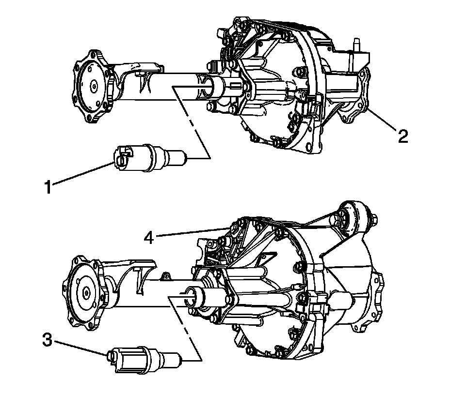

Actuator: Service and Repair
Front Drive Axle Actuator Replacement
Removal Procedure
1. Raise and support the vehicle. Refer to Lifting and Jacking the Vehicle.
2. Remove the front differential carrier shield, if equipped.
3. Disconnect the electrical connector from the actuator.

4. Remove the actuator (1) for the 8.25 inch axle (2) or (3) for the 9.5 inch axle (4) by turning the actuator counterclockwise.
Installation Procedure
1. Apply sealant to the threads of the actuator (1) for the 8.25 inch axle (2) or (3) for the 9.25 inch axle (4). Use the correct sealant. Refer to Sealers, Adhesives, and Lubricants.
Notice: Refer to Fastener Notice.
2. Install the actuator (1 or 3).
Tighten the actuator to 20 N.m (15 lb ft).
3. Connect the electrical connector to the actuator.
4. Install the front differential carrier shield, if equipped.
5. Lower the vehicle.